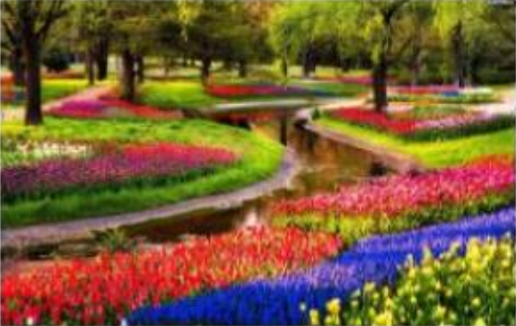

Sự hình thành sa thạch đầy màu sắc ở phía bắc Coyote Buttes, sa mạc Arizona, Hoa Kỳ được tạo nên từ các cồn cát xếp trồng lên nhau cùng sự lắng đọng của muối canxi, tạo nên những đường cong, uốn lượn độc đáo và quyền rũ

Nằm thị trấn Lisse, cách thủ đô Amsterdam, Hà Lan khoảng 40phút đi xe buýt, Keukenhof là một trong những vườn hoa xuân đẹp nhất trên thế giới. Nghệ thuật trình bày hoa trên cánh đồng rộng lớn rất đặc sắc với những đường cong quyến rũ của đài hoa tulip, thủy tiên, dạ hương lan,... tạo nên bức tranh tuyệt diệu